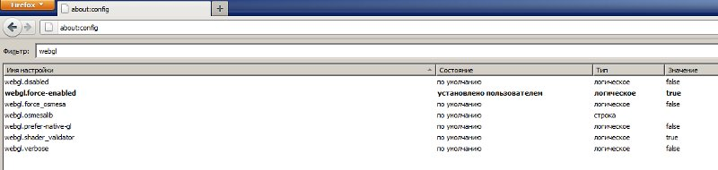

Проблемы и решения¶
Проблемы при запуске рендерера¶
1. Появляется сообщение “Browser could not initialize WebGL.”
Следует выполнить действия, описанные в разделе Ошибка инициализации WebGL.
2. Видны элементы интерфейса и фон, но сцена по умолчанию не отображается (куб с логотипом). При этом тестовый сайт http://get.webgl.org/ и другие WebGL приложения работают корректно.
Вероятные причины:
- Браузер не настроен для работы с локальными ресурсами. См. раздел Настройка браузера для загрузки локальных ресурсов.
- Файлы ресурсов, которые пытается загрузить рендерер, были перемещены или удалены.
- Используется комбинация браузера, драйверов и операционной системы, не обеспечивающая полную поддержку WebGL (примеры: Internet Explorer 11 / Windows, открытые драйверы / Linux).
Ошибка инициализации WebGL¶
Сайт http://get.webgl.org/ при просмотре в браузерах Chrome или Firefox последней версии сообщает о проблемах. Что делать?
- Установить доступные обновления для системы (для Windows см. инструкцию). В случае Windows установить последнюю версию DirectX. Перезагрузить систему.
- Рекомендуется проводить своевременное обновление драйверов для графических карт. Чтобы определить тип и производителя карты, можно ввести about:gpu (или chrome://gpu) в адресную строку браузера Chrome...
{kind=link}
или воспользоваться средством диагностики DirectX dxdiag (только для Windows).

Необходимо загрузить драйверы с соответствующего центра поддержки (например, Intel, Nvidia, AMD/ATI). После установки драйверов перезагрузить систему.
- Если в результате вышеперечисленных действий инициализировать рендеринг не удается (или нет возможности обновить систему), можно попробовать изменить настройки браузера.
В Chrome:
Ввести about:flags (или chrome://flags) в адресную строку браузера, нажать Включить (Enable) под опцией Переопределение списка программного рендеринга (Override software rendering list) и перезапустить браузер.
{kind=link}
В Firefox:
Ввести about:config в адресную строку браузера, найти параметр webgl.force-enabled и переключить его двойным щелчком мыши из false в true.
{kind=link}
Примечание
Для пользователей Linux - ввиду неполной реализации OpenGL стека в драйверах с открытым кодом в настоящий момент рекомендуется использовать проприетарные драйверы текущей версии для графических процессоров Nvidia и AMD.
Использование локального web-сервера¶
Простым вариантом обеспечения просмотра локальных ресурсов в браузерах может быть запуск web-сервера из стандартной библиотеки Python.
На Windows:
Загрузить и инсталлировать последнюю версию Python с официального сайта. На сегодняшний день это версия 3.4, и по умолчанию установка произойдет в директорию Python34 на диске C.
Запустить командную строку (Command Prompt).
Выполнить команды:
> c: > /Python34/python -m http.server
Перейти на страницу http://localhost:8000, на которой выбрать нужный файл для отображения.
На Linux:
> python -m SimpleHTTPServer
или:
> python3 -m http.server
Можно указать порт дополнительным параметром:
> python -m SimpleHTTPServer 8080